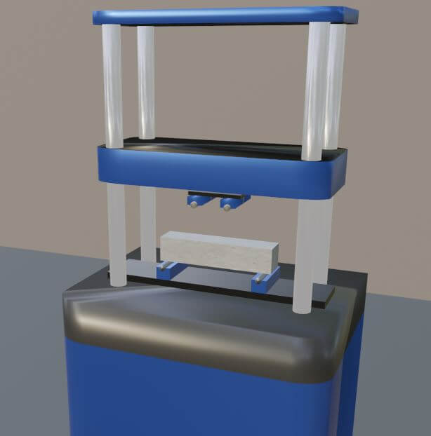

CONCRETO
Resistencia del concreto a compresión

El objetivo de este ensayo es obtener la resistencia a compresión de un espécimen cilíndrico de concreto de 150 mm de diámetro y 300 mm de altura. Esta prueba se lleva a cabo en el ámbito constructivo para estimar la calidad de los concretos usados en obra, la cual depende del proceso de fabricación, calidad de los agregados, relación agua/cemento y curado. En este laboratorio virtual se seguirá el estándar de la ASTM C39 y la NTC 673.
Resistencia del concreto a flexión

Un proyecto de: